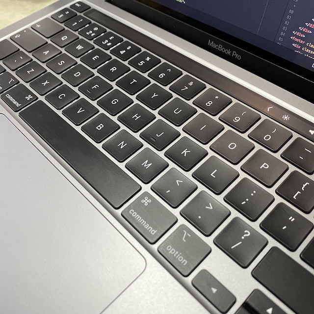
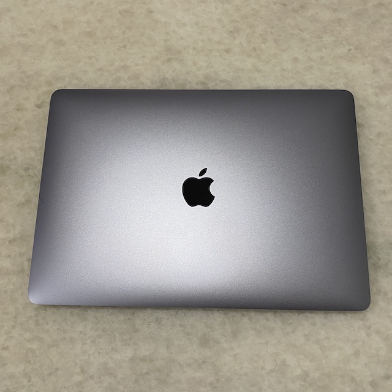
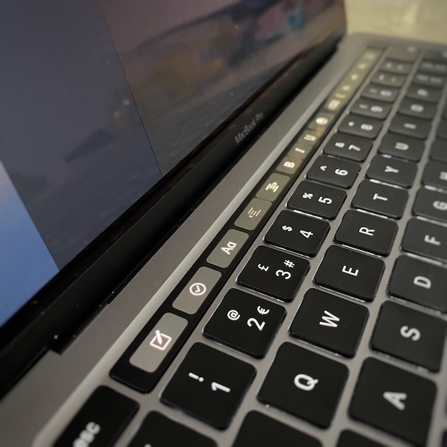

MacBook Pro 13" 2020, 10th Generation i5 Review
26/6/2020
Introduction
The new 2020 MacBook Pro adds in new hardware and an improved keyboard over previous models whilst keeping the same price as previous years. With the popular 13” form factor as it's portable, how does this MacBook Pro 13” fair up to a lighter and thinner MacBook Air or the meaty and more expensive 16” MacBook Pro? Let’s delve in!
What's new?
The keyboard finally gets an upgrade from the controversial keyboard from 2016 to the new Magic Keyboard. The keyboard removes the shallow keys from the butterfly keyboard of the previous design. This makes the key travel to be 1mm, however making the MacBook slightly thicker than previous.
There is now a physical power/Touch ID button as well as an escape key which is great from those who prefer a solid button.
Performance
This model of the popular MacBook Pro uses the 10th Generation “Ice Lake” Intel i5-1038NG7, a 25-watt processor with four cores and eight threads. It is similar to the i5-1035G7 (15-watt) found in popular 13” Windows laptops such as the Dell XPS 13 and the Microsoft Surface Laptop 3. On top of the new CPU design, it provides better graphics processing and memory (DDR4X instead of DDR3 RAM found in the 8th Generation chips).
Graphics
Graphics performance is limited to Intel’s integrated graphics so don’t expect super fast video export or high FPS in games. If you are heavily into video editing or do a lot of graphic intensive tasks, maybe invest in either a eGPU to leave at home whilst taking the laptop to work/university and be able to have improved graphical performance or purchasing the larger and more expensive, yet more powerful MacBook Pro 16”.
Display
The display is at 2560x1600 native resolution at 227 pixels per inch which is crisp and the same as the MacBook Air. However compared to the Air, the Pro’s boasts 500 nits of brightness, enough to work outside with visible sunlight and supports the P3 wide colour gamut for accurate photo editing.
The sharp display also includes True Tone from 2018 which is present on Apple’s other products. It changes the hue of the screen to adjust the white point and illumination based on your environmental lighting ignorer to render more/less warm white to the room’s lighting.
This MacBook supports one 5K or 6K display at 60Hz or up to two 4K displays at 60Hz.
Battery
With its 58 watt-hour battery, battery life is sufficient for a whole day of lectures and going home to charge which is impressive for such as small yet powerful laptop. Apple advertises 10 hours of surfing the web, however realistically we got around 6-7 hours which isn’t too bad. The battery lasts around the same as similarly specced Windows 10 laptops.
Camera
Unfortunately, the MacBook Pro’s camera quality is poor for 2020 standards. It boasts an out of date 720p camera, it produces grainy indoors video and even in well lit rooms, it doesn’t perform well. However it should be sufficient for popular Zoom Calls and FaceTime to see loved ones if quality isn’t too much of an issue.
Network and IO
Unfortunately all models of the MacBook Pro doesn’t support Wi-Fi 6 which is a bummer but it supports Bluetooth 5 which is a nice upgrade!
However with the higher spec model, it comes with 4 Thunderbolt 3 ports. As Thunderbolt is compatible with USB Type-C connectors, you can plug in a variety of accessories such as external SSDs and monitors. If you have the MacBook Air or the base model MacBook Pro 13”, we recommend purchasing a dongles to use SD cards and external monitors.
Touch Bar and Touch ID
In 2016, Apple announced they will be adding a Touch Bar to the MacBook Pro line up. This year they add the Touch Bar to both models to Pro line up. This bar in our opinion is a gimmick as most of the function provided can be accessed through the amazing tracking pad. The main reason we used the Touch Bar was to either adjust the screen brightness or volume, yet old function keys does the same job on the MacBook Air.
Even though MacBooks don’t have the superior FaceID found on Apple’s Flagship iPhones and iPad Pros, the TouchID is still very good. It allows accessing your computer at a finger’s touch away and signing into websites using iCloud Keychain without the hassle of typing in passwords to regular sites.
Specs
2.0GHz Quad-Core Intel i5, 16GB 3733MHz LPDDR4, Intel Iris Plus Graphics, 512GB SSD.
Conclusion
We love this machine! However considering the price, most people will be sufficient with the MacBook Pro base model at a cheaper price with the same functionality and day to day usability. With the 13” size, this laptop is very portable and will fit into many students bags for travelling from accommodation to university. The updated keyboard is a pleasure to type on for extended periods which is a bonus for long nights at the library!
You can grab an excellent discount online at Apple if you have a student email (through UniDays)!